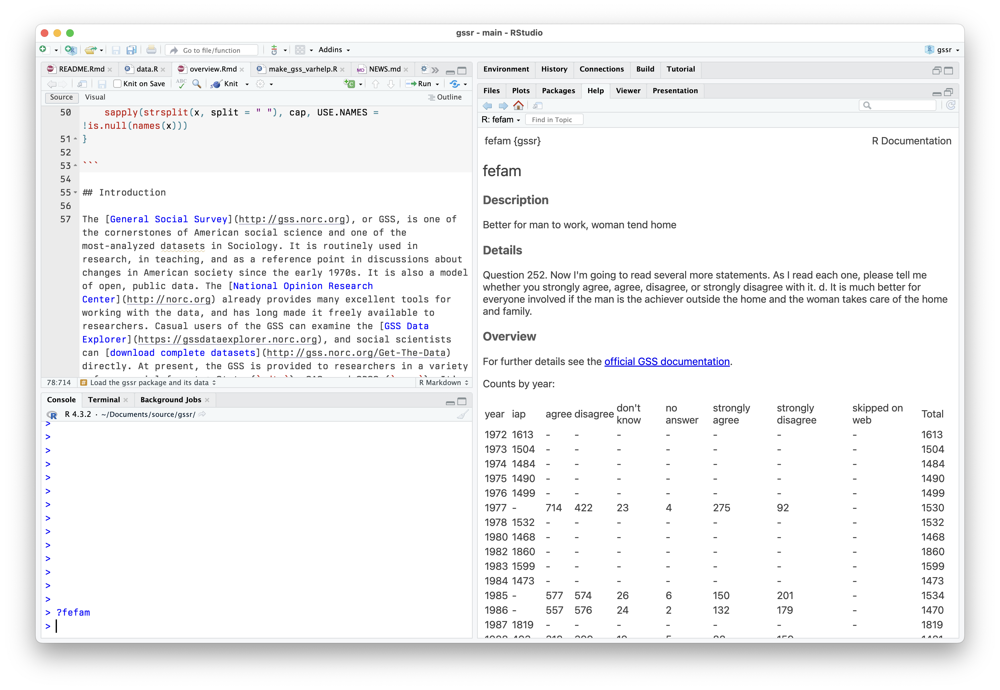

Introduction
The General Social Survey, or GSS,
is one of the cornerstones of American social science and one of the
most-analyzed datasets in Sociology. It is routinely used in research,
in teaching, and as a reference point in discussions about changes in
American society since the early 1970s. It is also a model of open,
public data. The National Opinion Research
Center already provides many excellent tools for working with the
data, and has long made it freely available to researchers. Casual users
of the GSS can examine the GSS Data Explorer, and
social scientists can download complete datasets
directly. At present, the GSS is provided to researchers in a variety of
commercial formats: Stata (.dta), SAS, and SPSS
(.sav). It’s not too difficult to get the data into R using
the Haven package, but it can
be a little annoying to have to do it repeatedly, or across projects.
After doing it one too many times, I got tired of it and I made a
package instead. Currently, the gssr package provides
Release 2a the GSS Cumulative Data File (1972-2022); three GSS Three
Wave Panel Data Files (for panels beginning in 2006, 2008, and 2010,
respectively); and the 2020 panel file. The package also integrates
codebook information about variables into R’s help system, allowing them
to be accessed via the help browser or from the console with
?. The gssr package makes the GSS a little
more accessible to users of R, the free software environment for
statistical computing, and thus helps in a small way to make the GSS
even more open than it already is.
Packages
This article makes use of some additional packages beyond
gssr itself. My assumption is that users of
gssr will most likely use and analyze the data in
conjunction with some combination of Tidyverse tools and the survey, srvyr, and panelr packages.
library(dplyr)
#>
#> Attaching package: 'dplyr'
#> The following objects are masked from 'package:stats':
#>
#> filter, lag
#> The following objects are masked from 'package:base':
#>
#> intersect, setdiff, setequal, union
library(ggplot2)
library(haven)
library(tibble)
library(survey)
#> Loading required package: grid
#> Loading required package: Matrix
#> Loading required package: survival
#>
#> Attaching package: 'survey'
#> The following object is masked from 'package:graphics':
#>
#> dotchart
library(srvyr)
#>
#> Attaching package: 'srvyr'
#> The following object is masked from 'package:stats':
#>
#> filterLoad the gssr package and its data
library(gssr)
#> Package loaded. To attach the GSS data, type data(gss_all) at the console.
#> For the codebook, type data(gss_dict).
#> For the panel data and documentation, type e.g. data(gss_panel08_long) and data(gss_panel_doc).
#> For help on a specific GSS variable, type ?varname at the console.We will begin with the Cumulative Data file (1972-2022). As the
startup message notes, the data objects are not automatically loaded.
That is, we do not use R’s “lazy loading” functionality. This is because
the main GSS dataset is rather large. Instead we load it manually with
data(). For the purposes of this vignette, because the full
Cumulative Data object is big, we will use just a few columns of it
stored in an object called gss_sub. But all the code here
will also work with the full dataset object, gss_all, which
you can load with the command data(gss_all). We will also
load the tibble that contains summary information for the variables in
the Cumulative Data File. This is called gss_dict.
data(gss_sub)
data(gss_dict)
gss_dict
#> # A tibble: 6,663 × 12
#> pos variable label missing var_doc_label value_labels var_text years
#> <int> <chr> <chr> <int> <chr> <chr> <chr> <list>
#> 1 1 year gss year… 0 gss year for… [NA(d)] don… None <NULL>
#> 2 2 wrkstat labor fo… 36 labor force … [1] working… 1. Last… <tibble>
#> 3 3 hrs1 number o… 30830 number of ho… [89] 89+ ho… 1a. If … <tibble>
#> 4 4 hrs2 number o… 70989 number of ho… [89] 89+ ho… 1b. If … <tibble>
#> 5 5 evwork ever wor… 46944 ever work as… [1] yes; [2… 1c. If … <tibble>
#> 6 6 occ r's cens… 48123 r's census o… [NA(d)] don… 2a. Wha… <tibble>
#> 7 7 prestige r's occu… 48123 r's occupati… [NA(d)] don… 2a. Wha… <tibble>
#> 8 8 wrkslf r self-e… 4041 r self-emp o… [1] self-em… 2e. (Ar… <tibble>
#> 9 9 wrkgovt govt or … 44311 govt or priv… [1] governm… 2f. (Ar… <tibble>
#> 10 10 commute travel t… 71060 travel time … [97] 97+ mi… 2g. Abo… <tibble>
#> # ℹ 6,653 more rows
#> # ℹ 4 more variables: var_yrtab <list>, col_type <chr>, var_type <chr>,
#> # var_na_codes <chr>The GSS data comes in a labelled format, mirroring the way it is encoded for Stata and SPSS platforms. The numeric codes are the content of the column cells. The labeling information is stored as an attribute of the column.
gss_sub
#> # A tibble: 72,390 × 20
#> year id ballot age race sex degree padeg madeg
#> <dbl+lbl> <dbl> <dbl+lbl> <dbl> <dbl+l> <dbl+l> <dbl+l> <dbl+l> <dbl+lbl>
#> 1 1972 1 NA(i) [iap] 23 1 [whi… 2 [fem… 3 [bac… 0 [les… NA(i) [iap]
#> 2 1972 2 NA(i) [iap] 70 1 [whi… 1 [mal… 0 [les… 0 [les… 0 [les…
#> 3 1972 3 NA(i) [iap] 48 1 [whi… 2 [fem… 1 [hig… 0 [les… 0 [les…
#> 4 1972 4 NA(i) [iap] 27 1 [whi… 2 [fem… 3 [bac… 3 [bac… 1 [hig…
#> 5 1972 5 NA(i) [iap] 61 1 [whi… 2 [fem… 1 [hig… 0 [les… 0 [les…
#> 6 1972 6 NA(i) [iap] 26 1 [whi… 1 [mal… 1 [hig… 3 [bac… 4 [gra…
#> 7 1972 7 NA(i) [iap] 28 1 [whi… 1 [mal… 1 [hig… 3 [bac… 1 [hig…
#> 8 1972 8 NA(i) [iap] 27 1 [whi… 1 [mal… 3 [bac… 3 [bac… 1 [hig…
#> 9 1972 9 NA(i) [iap] 21 2 [bla… 2 [fem… 1 [hig… 1 [hig… 1 [hig…
#> 10 1972 10 NA(i) [iap] 30 2 [bla… 2 [fem… 1 [hig… 0 [les… 0 [les…
#> # ℹ 72,380 more rows
#> # ℹ 11 more variables: relig <dbl+lbl>, polviews <dbl+lbl>, fefam <dbl+lbl>,
#> # vpsu <dbl+lbl>, vstrat <dbl+lbl>, oversamp <dbl+lbl>, formwt <dbl+lbl>,
#> # wtssall <dbl+lbl>, wtssps <dbl+lbl>, sampcode <dbl+lbl>, sample <dbl+lbl>We will use the label information later when recoding the variables into, say, character or factor variables.
Descriptive analysis of the data: an example
The GSS is a complex survey. When working with it, we need to take
its structure into account in order to properly calculate statistics
such as the population mean for a variable in some year, its standard
error, and so on. For these tasks we use the survey and
srvyr packages. For details on survey, see
Lumley (2010). We will also do some recoding prior to analyzing the
data, so we load several additional tidyverse packages to
assist us.
We will examine a topic that was the subject of recent media
attention, in the New York Times and elsewhere, regarding the
beliefs of young men about gender roles. Some surveys seemed to point to
some recent increasing conservatism on this front amongst young men. As
it happens, the GSS has a longstanding question named
fefam, where respondents are asked to give their opinion on
the following statement:
It is much better for everyone involved if the man is the achiever outside the home and the woman takes care of the home and family.
Respondents may answer that they Strongly Agree, Agree, Disagree, or Strongly Disagree with the statement (as well as refusing to answer, or saying they don’t know).
Look at the Variable’s summary
Variable summaries for the cumulative data file are built in to
gssr and are integrated into R’s help system. For example,
we can type ?fefam at the console and have the variable’s
documentation appear in the documentation browser.

Scrolling further down will give a summary of the values the variable can take.
Subset the Data
The GSS data retains labeling information (as it was originally
imported via the haven package). When working with the data
in an analysis, we will probably want to convert the labeled variables
to data types such as factors. This should be done with care (and not on
the whole dataset all at once). Typically, we will want to focus on some
relatively small subset of variables and examine those. For example,
let’s say we want to explore the fefam question. We will
subset the data and then prepare that for analysis. Here we are going to
subset gss_sub into an object called gss_fam
containing just the variables we want to examine, along with core
measures that identify respondents (such as id and
year) and variables necessary for the survey weighting
later (such as wtssps).
cont_vars <- c("year", "id", "ballot", "age")
cat_vars <- c("race", "sex", "fefam")
wt_vars <- c("vpsu",
"vstrat",
"oversamp",
"formwt", # weight to deal with experimental randomization
"wtssps", # weight variable
"sampcode", # sampling error code
"sample") # sampling frame and method
my_vars <- c(cont_vars, cat_vars, wt_vars)
gss_fam <- gss_sub |>
select(all_of(my_vars))
gss_fam
#> # A tibble: 72,390 × 14
#> year id ballot age race sex fefam vpsu
#> <dbl+lbl> <dbl> <dbl+lbl> <dbl+lbl> <dbl+l> <dbl+l> <dbl+lbl> <dbl+lbl>
#> 1 1972 1 NA(i) [iap] 23 1 [whi… 2 [fem… NA(i) [iap] NA(i) [iap]
#> 2 1972 2 NA(i) [iap] 70 1 [whi… 1 [mal… NA(i) [iap] NA(i) [iap]
#> 3 1972 3 NA(i) [iap] 48 1 [whi… 2 [fem… NA(i) [iap] NA(i) [iap]
#> 4 1972 4 NA(i) [iap] 27 1 [whi… 2 [fem… NA(i) [iap] NA(i) [iap]
#> 5 1972 5 NA(i) [iap] 61 1 [whi… 2 [fem… NA(i) [iap] NA(i) [iap]
#> 6 1972 6 NA(i) [iap] 26 1 [whi… 1 [mal… NA(i) [iap] NA(i) [iap]
#> 7 1972 7 NA(i) [iap] 28 1 [whi… 1 [mal… NA(i) [iap] NA(i) [iap]
#> 8 1972 8 NA(i) [iap] 27 1 [whi… 1 [mal… NA(i) [iap] NA(i) [iap]
#> 9 1972 9 NA(i) [iap] 21 2 [bla… 2 [fem… NA(i) [iap] NA(i) [iap]
#> 10 1972 10 NA(i) [iap] 30 2 [bla… 2 [fem… NA(i) [iap] NA(i) [iap]
#> # ℹ 72,380 more rows
#> # ℹ 6 more variables: vstrat <dbl+lbl>, oversamp <dbl+lbl>, formwt <dbl+lbl>,
#> # wtssps <dbl+lbl>, sampcode <dbl+lbl>, sample <dbl+lbl>Recode the Subsetted Data
Next, we will do some recoding and create some new variables. We also
create some new variables: age quintiles, a variable flagging whether a
respondent is 25 or younger, recoded fefam to binary
“Agree” or “Disagree” (with non-responses dropped).
We begin by figuring out the cutpoints for age quintiles.
qrts <- quantile(as.numeric(gss_fam$age),
na.rm = TRUE)
qrts
#> 0% 25% 50% 75% 100%
#> 18 32 44 60 89
quintiles <- quantile(as.numeric(gss_fam$age),
probs = seq(0, 1, 0.2), na.rm = TRUE)
quintiles
#> 0% 20% 40% 60% 80% 100%
#> 18 29 39 50 64 89Next, we clean up gss_fam a bit, discarding some of the
label and missing value information we don’t need. The data in
gss_all retains the labeling structure provided by the GSS.
Variables are stored numerically with labels attached to them. Often,
when using the data in R, it will be convenient to convert the
categorical variables we are interested in to character or factor type
instead.
## Recoding
## The convert_agegrp() and capwords() functions seen here are defined
## at the top of the Rmd file used to produce this document.
gss_fam <- gss_fam |>
mutate(
# Convert all missing to NA
across(everything(), haven::zap_missing),
# Convert all weight vars to numeric
across(all_of(wt_vars), as.numeric),
# Make all categorical variables factors and relabel nicely
across(all_of(cat_vars), forcats::as_factor),
across(all_of(cat_vars), \(x) forcats::fct_relabel(x, capwords, strict = TRUE)),
# Create the age groups
ageq = cut(x = age, breaks = unique(qrts), include.lowest = TRUE),
ageq = forcats::fct_relabel(ageq, convert_agegrp),
agequint = cut(x = age, breaks = unique(quintiles), include.lowest = TRUE),
agequint = forcats::fct_relabel(agequint, convert_agegrp),
year_f = droplevels(factor(year)),
young = ifelse(age < 26, "Yes", "No"),
# Dichotomize fefam
fefam = forcats::fct_recode(fefam, NULL = "IAP", NULL = "DK", NULL = "NA"),
fefam_d = forcats::fct_recode(fefam,
Agree = "Strongly Agree",
Disagree = "Strongly Disagree"),
fefam_n = recode(fefam_d, "Agree" = 0, "Disagree" = 1),
samplerc = case_when(sample %in% c(3:4) ~ 3,
sample %in% c(6:7) ~ 6,
.default = sample))
## Some of the recoded variables
gss_fam |>
filter(year > 1976) |>
select(race:fefam, agequint:fefam_d) |>
relocate(year_f)
#> # A tibble: 64,800 × 7
#> year_f race sex fefam agequint young fefam_d
#> <fct> <fct> <fct> <fct> <fct> <chr> <fct>
#> 1 1977 White Female Agree Age 50-64 No Agree
#> 2 1977 White Female Agree Age 29-39 No Agree
#> 3 1977 White Male Strongly Agree Age 64+ No Agree
#> 4 1977 White Male Strongly Disagree Age 18-29 No Disagree
#> 5 1977 White Female Agree Age 18-29 Yes Agree
#> 6 1977 White Male Disagree Age 29-39 No Disagree
#> 7 1977 White Female Agree Age 64+ No Agree
#> 8 1977 White Female Disagree Age 29-39 No Disagree
#> 9 1977 White Female Agree Age 64+ No Agree
#> 10 1977 White Female Disagree Age 39-50 No Disagree
#> # ℹ 64,790 more rowsIntegrate the Survey Weights
At this point we can calculate some percentages, such as the percent
of male and female respondents disagreeing with the fefam
proposition each year.
gss_fam |>
group_by(year, sex, young, fefam_d) |>
tally() |>
drop_na() |>
mutate(pct = round((n/sum(n))*100, 1)) |>
select(-n)
#> # A tibble: 184 × 5
#> # Groups: year, sex, young [92]
#> year sex young fefam_d pct
#> <dbl+lbl> <fct> <chr> <fct> <dbl>
#> 1 1977 Male No Agree 71.8
#> 2 1977 Male No Disagree 28.2
#> 3 1977 Male Yes Agree 54.3
#> 4 1977 Male Yes Disagree 45.7
#> 5 1977 Female No Agree 66.6
#> 6 1977 Female No Disagree 33.4
#> 7 1977 Female Yes Agree 41.9
#> 8 1977 Female Yes Disagree 58.1
#> 9 1985 Male No Agree 53.6
#> 10 1985 Male No Disagree 46.4
#> # ℹ 174 more rowsHowever, these calculations do not take the GSS survey design into
account. We set up the data so we can properly calculate population
means and errors and so on. We use the svyr package’s
wrappers to survey for this.
options(survey.lonely.psu = "adjust")
options(na.action="na.pass")
gss_svy <- gss_fam |>
filter(year > 1974) |>
tidyr::drop_na(fefam_d, young) |>
mutate(stratvar = interaction(year, vstrat)) |>
as_survey_design(id = vpsu,
strata = stratvar,
weights = wtssps,
nest = TRUE)The gss_svy object contains the same data as
gss_fam, but incorporates information about the sampling
structure in a way that the survey package’s functions can
work with:
gss_svy
#> Stratified 1 - level Cluster Sampling design (with replacement)
#> With (5977) clusters.
#> Called via srvyr
#> Sampling variables:
#> - ids: vpsu
#> - strata: stratvar
#> - weights: wtssps
#> Data variables: year (dbl+lbl), id (dbl), ballot (dbl+lbl), age (dbl+lbl), race
#> (fct), sex (fct), fefam (fct), vpsu (dbl), vstrat (dbl), oversamp (dbl),
#> formwt (dbl), wtssps (dbl), sampcode (dbl), sample (dbl), ageq (fct),
#> agequint (fct), year_f (fct), young (chr), fefam_d (fct), fefam_n (dbl),
#> samplerc (dbl), stratvar (fct)Calculate the survey-weighted statistics
We’re now in a position to calculate some properly-weighted summary statistics for the variable we’re interested in, for every year it is in the data.
## Get the breakdown for every year
out_ff <- gss_svy |>
group_by(year, sex, young, fefam_d) |>
summarize(prop = survey_mean(na.rm = TRUE, vartype = "ci")) |>
drop_na(sex)
out_ff
#> # A tibble: 184 × 7
#> # Groups: year, sex, young [92]
#> year sex young fefam_d prop prop_low prop_upp
#> <dbl+lbl> <fct> <chr> <fct> <dbl> <dbl> <dbl>
#> 1 1977 Male No Agree 0.708 0.662 0.754
#> 2 1977 Male No Disagree 0.292 0.246 0.338
#> 3 1977 Male Yes Agree 0.544 0.461 0.627
#> 4 1977 Male Yes Disagree 0.456 0.373 0.539
#> 5 1977 Female No Agree 0.673 0.636 0.711
#> 6 1977 Female No Disagree 0.327 0.289 0.364
#> 7 1977 Female Yes Agree 0.417 0.312 0.522
#> 8 1977 Female Yes Disagree 0.583 0.478 0.688
#> 9 1985 Male No Agree 0.541 0.489 0.594
#> 10 1985 Male No Disagree 0.459 0.406 0.511
#> # ℹ 174 more rowsPlot the Results
We finish with a polished plot of the trends in fefam
over time, for men and women in two (recoded) age groups over time.
theme_set(theme_minimal())
facet_names <- c("No" = "Age Over 25 when surveyed",
"Yes" = "Age 18-25 when surveyed")
fefam_txt <- "Disagreement with the statement, ‘It is much better for\neveryone involved if the man is the achiever outside the\nhome and the woman takes care of the home and family’"
out_ff |>
filter(fefam_d == "Disagree") |>
ggplot(mapping =
aes(x = year, y = prop,
ymin = prop_low,
ymax = prop_upp,
color = sex,
group = sex,
fill = sex)) +
geom_line(linewidth = 1.2) +
geom_ribbon(alpha = 0.3, color = NA) +
scale_x_continuous(breaks = seq(1978, 2022, 4)) +
scale_y_continuous(labels = scales::percent_format(accuracy = 1)) +
scale_color_manual(values = my_colors("bly")[2:1],
labels = c("Men", "Women"),
guide = guide_legend(title=NULL)) +
scale_fill_manual(values = my_colors("bly")[2:1],
labels = c("Men", "Women"),
guide = guide_legend(title=NULL)) +
facet_wrap(~ young, labeller = as_labeller(facet_names),
ncol = 1) +
coord_cartesian(xlim = c(1977, 2022)) +
labs(x = "Year",
y = "Percent Disagreeing",
subtitle = fefam_txt,
caption = "Kieran Healy http://socviz.co.\n
Data source: General Social Survey") +
theme(legend.position = "bottom")
The GSS Three Wave Panels
In addition to the Cumulative Data File, the gssr package also
includes the GSS’s panel data. The current rotating panel design began
in 2006. A panel of respondents were interviewed that year and followed
up on for further interviews in 2008 and 2010. A second panel was
interviewed beginning in 2008, and was followed up on for further
interviews in 2010 and 2012. And a third panel began in 2010, with
follow-up interviews in 2012 and 2014. The gssr package
provides three datasets, one for each of three-wave panels. They are
gss_panel06_long, gss_panel08_long, and
gss_panel10_long. The datasets are provided by the GSS in
wide format but (as their names suggest) are packaged here in long
format. The conversion was carried out using the panelr package and
its long_panel() function. Conversion from long back to
wide format is possible with the tools provided in
panelr.
We load the panel data as before. For example:
data(gss_panel06_long)
gss_panel06_long
#> # A tibble: 6,000 × 1,572
#> firstid wave ballot form formwt oversamp sampcode sample samptype
#> <fct> <dbl> <dbl+lbl> <dbl+l> <dbl> <dbl> <dbl+lb> <dbl+l> <dbl+lbl>
#> 1 9 1 3 [BALLOT … 2 [ALT… 1 1 501 9 [200… 2006 [200…
#> 2 9 2 3 [BALLOT … 2 [ALT… 1 1 501 9 [200… 2006 [200…
#> 3 9 3 3 [BALLOT … 2 [ALT… 1 1 501 9 [200… 2006 [200…
#> 4 10 1 1 [BALLOT … 1 [STA… 1 1 501 9 [200… 2006 [200…
#> 5 10 2 1 [BALLOT … 1 [STA… 1 1 501 9 [200… 2006 [200…
#> 6 10 3 1 [BALLOT … 1 [STA… 1 1 501 9 [200… 2006 [200…
#> 7 11 1 3 [BALLOT … 2 [ALT… 1 1 501 9 [200… 2006 [200…
#> 8 11 2 3 [BALLOT … 2 [ALT… 1 1 501 9 [200… 2006 [200…
#> 9 11 3 3 [BALLOT … 2 [ALT… 1 1 501 9 [200… 2006 [200…
#> 10 12 1 1 [BALLOT … 2 [ALT… 1 1 501 9 [200… 2006 [200…
#> # ℹ 5,990 more rows
#> # ℹ 1,563 more variables: vstrat <dbl+lbl>, vpsu <dbl+lbl>, wtpan12 <dbl+lbl>,
#> # wtpan123 <dbl+lbl>, wtpannr12 <dbl+lbl>, wtpannr123 <dbl+lbl>,
#> # letin1a <dbl+lbl>, abany <dbl+lbl>, abdefect <dbl+lbl>, abhlth <dbl+lbl>,
#> # abnomore <dbl+lbl>, abpoor <dbl+lbl>, abrape <dbl+lbl>, absingle <dbl+lbl>,
#> # accntsci <dbl+lbl>, acqasian <dbl+lbl>, acqattnd <dbl+lbl>,
#> # acqblack <dbl+lbl>, acqbrnda <dbl+lbl>, acqchild <dbl+lbl>, …The panel data objects were created by panelr but are
regular tibbles. The column names in long format do not have wave
identifiers. Rather, firstid and wave
variables track the cases. The firstid variable is unique
for every row and has no missing values. The id variable is
from the GSS and tracks individuals within waves.
gss_panel06_long |> select(firstid, wave, id, sex)
#> # A tibble: 6,000 × 4
#> firstid wave id sex
#> <fct> <dbl> <dbl+lbl> <dbl+lbl>
#> 1 9 1 9 2 [FEMALE]
#> 2 9 2 3001 2 [FEMALE]
#> 3 9 3 6001 2 [FEMALE]
#> 4 10 1 10 2 [FEMALE]
#> 5 10 2 3002 2 [FEMALE]
#> 6 10 3 6002 2 [FEMALE]
#> 7 11 1 11 2 [FEMALE]
#> 8 11 2 3003 2 [FEMALE]
#> 9 11 3 6003 2 [FEMALE]
#> 10 12 1 12 1 [MALE]
#> # ℹ 5,990 more rowsWe can look at attrition across waves with, e.g.:
gss_panel06_long |>
select(wave, id) |>
group_by(wave) |>
summarize(observed = n_distinct(id),
missing = sum(is.na(id)))
#> # A tibble: 3 × 3
#> wave observed missing
#> <dbl> <int> <int>
#> 1 1 2000 0
#> 2 2 1537 464
#> 3 3 1277 724The documentation tibble for the panel data is called
gss_panel_doc. It does not include information for the 2020
panel.
data(gss_panel_doc)
gss_panel_doc
#> # A tibble: 628 × 9
#> id description text properties_1 properties_2 properties_3 marginals_1
#> <chr> <chr> <chr> <list> <list> <list> <list>
#> 1 caseid CASEID None <tibble> <NULL> <NULL> <tibble>
#> 2 year YEAR None <tibble> <tibble> <tibble> <tibble>
#> 3 id ID None <tibble> <tibble> <tibble> <tibble>
#> 4 age AGE 13. … <tibble> <tibble> <tibble> <tibble>
#> 5 sex SEX 23. … <tibble> <tibble> <tibble> <tibble>
#> 6 race RACE 24. … <tibble> <tibble> <tibble> <tibble>
#> 7 racecen1 RACECEN1 1602… <tibble> <tibble> <tibble> <tibble>
#> 8 racecen2 RACECEN2 1602… <tibble> <tibble> <tibble> <tibble>
#> 9 racecen3 RACECEN3 1602… <tibble> <tibble> <tibble> <tibble>
#> 10 hispanic HISPANIC 1601… <tibble> <tibble> <tibble> <tibble>
#> # ℹ 618 more rows
#> # ℹ 2 more variables: marginals_2 <list>, marginals_3 <list>Each row is a variable. The id,
description, and text columns provide the
details on each question or measure. The properties and
marginals are provided in the remaining columns, with a
suffix indicating the wave.